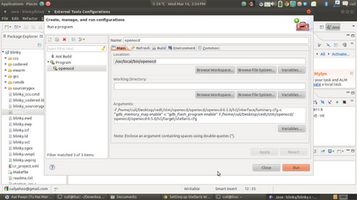
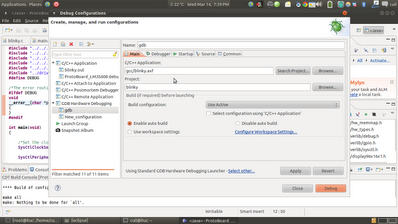
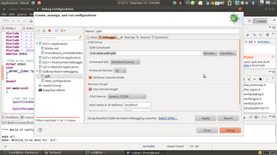
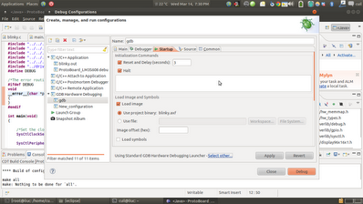
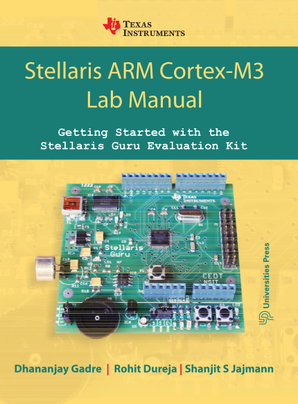

Introduction
What is a toolchain ?
The processor runs only what it understands. So as a developer its upto
you to make sure you give it only what it can run. But, what it can run
is totally different from what you can read. Thus, comes the concept of
higher level languages. Its best to make sure you use a single language
for development, and C is the most preferred. The toolchain converts
your code into something (hex files, 1's and 0's) which the processor
can understand.
That blackbox which converts the code from user readable format to the
hex format to be burnt onto the board, encompasses the
toolchain.
Parts of a Toolchain,
There are various parts of the toolchain. They include,
Compiler
Assembler
Linker
Debugger
Types of toolchains, (quite obviously depends on the host and the
target)
Now, the funny thing was when i started, i used to see weird things written everywhere like, arm-linux, arm-elf, arm-none-eabi,i386-linux, i386-elf these didn't make any sense in the beginning. What they signify is the the host and the target controller.
So step 1, would be to just get all the parts of the toolchain together on your system, either windows or linux. (Have tried both and linux works like a charm). Get everything using either
1. Yogarto
2. GNUARM
3. CodeSourcery Lite (i prefer this)
or integrate each of the compiler, assembler and linker from scratch. ( http://crosstool-ng.org/)
The next thing which you need is an IDE for your code. There are already pre-built IDE's with toolchains integrated,
There are a few IDE's out there which are free, but with limited functionality (either in terms of code-size or a time limit or insufficient support for all boards out there),
1. Keil MDK-ARM-Basic (Windows, under Wine in Linux)
2. IAR Embedded Workbench (Windows)
3. Atollic TrueSTUDIO (Windows)
The best thing would be to integrate Eclipse (link) as an IDE, and
configure it for making the required hex file (finally burned onto the
board).
Setting
up the Toolchain
The Open On-Chip
Debugger (OpenOCD) is aims to provide debugging,
in-system programming and boundary-scan testing for embedded
target systems. OpenOCD provides the ability to flash NAND and
NOR FLASH memory devices that are attached to the processor on
the target system. Flash programming is supported for external CFI compatible flashes (Intel and AMD/Spansion command set) and several internal flashes (LPC2000, AT91SAM7, STR7x, STR9x, LM3 and STM32x).
JTAG: OpenOCD uses a "hardware- interface dongle" to communicate with the JTAG (IEEE 1149.1) compliant TAPs on your target board. A TAP is a "Test Access Port", a module which process special instructions and data. TAPs are daisy-chained within and between chips and boards.
Dongles: OpenOCD currently suppports many types of hardware dongles: USB based, parallel port based, and other standalone boxes that run OpenOCD internally.
The JTAG is a standard debugging interface inbuilt in all ARM microcontrollers.
I use OpenOCD with GDB integrated with Eclipse for debugging with the JTAG.
Every ARM microcontroller has onboard two immediate solutions for debugging JTAG (Joint Test Action Group) and SWD (Serial Wire Debug). These are two standards used for debugging.
So how does it help me ?
Hardware debugging is a boon! Its value is only known to someone who has spent countless hours going over lines of code not being able to figure out where the error is. Hardware debugging using OpenOCD and GDB helps set breakpoints, instruction line execution, set watchpoints and lets the programmer lookup memory and register level values. Debugging can save you hours of precious time.
How do i run it ?
COMMAND LINE
1. Install OpenOCD.
see website, make sure you have all the dependencies. libftdi-dev
2. Run OpenOCD as root
sudo openocd -f ./tcl/interface/luminary-lm3s811.cfg -f ./tcl/target/stellaris.cfg
#make sure you choose the correct interfaces.
#ICDI - In-Circuit Debugging Interface (provided by TI)
3. How do i debug ?
Use gdb debugger to debug, #using telnet is another option
arm-none-eabi-gdb .axf
target remote localhost:4444
monitor reset halt
load
#pressing Ctrl-C anytime will halt execution.
#continue resume execution
#help gives a total list of commands that can be used.
Using with Eclipse
Eclipse needs to be started using Super User privileges for accessing Hardware Devices using OpenOCD, alternative suggested ahead .
After configuring the toolchain from a previous post, the current
environment on Ubuntu looks like,






Eclipse needs to be started using Super User privileges for
accessing Hardware Devices using OpenOCD, alternative suggested
ahead.
After configuring the toolchain from a previous post, the current
environment on Ubuntu looks as shown,
Go to the External Tools Configuration, Create a new Tools
Configuration named OpenOCD as
shown,
This should enable you to start OpenOCD on clicking the external tools configuration found on the Eclipse main panels.
Now to get the GDB debugger working, Create another External Tools
Configuration as shown,
Make sure the configurations are entered as
shown,
You are now set to run OpenOCD integrated with the Eclipse IDE,
First run OpenOCD from the external tools configuration, then run the debugger from the external tools drop down, Eclipse then changes to the Debug Perspective as shown,
Thats all i am saying, Go Ahead click a few buttons, figure it out. Cheers.
Running OpenOCD with Eclipse without Sudo
1. Change the current User to group plugdev
2. Determine Device and Product ID
3. Add hardware to the plugdev group, using 2.
4. Reload udev file to get it working.
Note :
OpenOCD and gdb debugging won't work on a virtual environment. Make sure you do it on your native system. OpenOCD is available for both windows and linux.
http://openocd.sourceforge.net/doc/html/GDB-and-OpenOCD.html
Android is a software platform for smartphones and Internet tablets. It is a mobile operating system initially developed by Android Inc. . Android was bought by Google in 2005. Android is based upon a modified version of the Linux kernel. Google and other members of the Open Handset Alliance collaborated to develop and release Android to the world.
The Android operating system software stack consists of Java applications running on a Java based object oriented application framework on top of Java core libraries running on a Dalvik virtual machine featuring JIT compilation. Libraries written in C include the surface manager, OpenCore[18] media framework, SQLite relational database management system, OpenGL ES 2.0 3D graphics API, WebKit layout engine, SGL graphics engine, SSL, and Bionic libc.
SocialCalc is a spreadsheet application developed using JavaScript and was originally coded by Dan Bricklin of Software Garden Inc. for Socialtext Inc.
Working on similar grounds, AnalytXLS aims at providing functionality in mobile devices that could assimilate worksheets, forms, tabulated data etc.


Features
The project has been implemented with the help of
SocialCalc. The cells and the basic look of this part has been ported to android using a webview.
Functions on Cells
All the functions which can be used in the context of cells and the data in them are shown in the various tab headings of "Edit",
"Format", "Sort", "Audit", "Comment", "Names" and "Graph" as shown in the shot below. A simple textbox as shown shows the content of the cell selected.
Utility Features
Various functionality just as in a normal spreadsheet has also been
implemented. These features include :
1. "Save" : This saves the whole worksheet i.e a whole collection of
sheets temporarily into a SQLite database. This is for saving work on a
minute to minute basis and should not be used for permanent storage.
Also, only the last most recent saved worksheet is shown back to the
user.
2. "Load" : This loads the last most recent saved worksheet. It
retrieves this information again from the SQLite Database.
3. "Add Sheet" : This introduces another sheet in the current
worksheet. The new sheet is added in the bar above the "Add Sheet"
bar.
4. "Delete Sheet" : Deletes the selected sheet from the worksheet and
removes it from the tab above.
5. "Rename Sheet" : This renames the sheet name to the user customized
name.
6. "Export" : This opens a ListView to choose the various places where
the worksheet can be exported to. Currently, the worksheet can be
exported to the SD Card of your device. Google Document integration is
near completion and would be added soon.
7. "Exit" : This exits the application and returns us to the main home
window.


Book
Stellaris ARM Cortex-M3 Lab Manual - Getting Started with the
Stellaris Guru Evaluation Kit; Dhananjay V. Gadre, Rohit
Dureja, Shanjit S. Jajmann, 1st Edition, 2013, Universities
Press.
Consists of over 25 fully explained experiments which can be done using
the Guru kit and over 30 experiments which are included as exercises
for the reader.
The publication is included as a part of the Stellaris Guru Evaluation
kit and is also available for off-the-shelf purchasing.
Complete source code and makefiles for all experiments is available at
www.armcontroller.in
